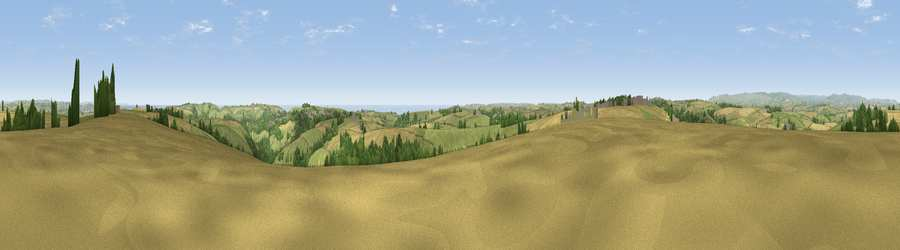

Viewpoint near Cornworthy
#2540 in England · top 7% of its area beats it · near Cornworthy · access?Where it is
The exact computed spot (SX 84025 52575). Click the marker for map links.
Public access: no public right of way or access land is recorded at this exact spot — it may be on private land. Computed from Natural England's CRoW access layer and OpenStreetMap rights of way — not the legal definitive map. Always verify locally.
The view, rendered

A 360° render of this exact spot computed from the terrain model, tree cover and land cover — summer colours, afternoon light, calibrated against photographs of famous viewpoints. Real trees, hedges and buildings will differ in detail.
The panorama
Grey silhouette: terrain skyline in each direction (720 bearings, Earth curvature and refraction included). Dashed green: skyline with trees (+15 m) and buildings (+8 m) as obstacles. Blue strip: how far the ground is visible on each bearing.
Where the view opens
Wedge length = distance to the farthest visible ground on that bearing (vegetation-aware). Rings at 10, 25 and 50 km.
What fills the view
46% grassland · 34% cropland · 13% woodland · 4% water · 2% built-up
Angular shares of the visible panorama (visual magnitude), not map area. Landscape diversity 0.52 (0–1 Shannon).
Key numbers
More beautiful places nearby
The staircase of upgrades: each row has a higher view potential than everything closer. Driving times are estimates from straight-line distance, calibrated against real road routing — check an actual route before setting out.
| Place | Direction | Drive | Score |
|---|---|---|---|
| Viewpoint near Dartmouth | ESE · 4 km | ~9 min | 79.2 |
| Viewpoint near Kingswear | SE · 5 km | ~11 min | 80.2 |
| Viewpoint near Kingswear | ESE · 7 km | ~14 min | 81.7 |
| Viewpoint near Kingswear | E · 7 km | ~15 min | 83.8 |
| Viewpoint near East Prawle | SSW · 18 km | ~31 min | 84.6 |
| High Peak | NE · 42 km | ~62 min | 85.3 |
| Pencarrow Head | W · 69 km | ~92 min | 86.0 |
| Golden Cap | NE · 69 km | ~92 min | 88.7 |
50.36162, -3.63185 · source: screening · position refined by local search. Computed location — check access rights before visiting.